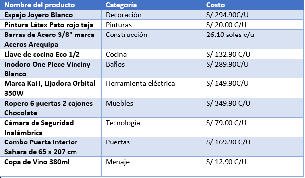

Pagina web de una Ferreteria
Sea bienvenido a mi pagina web sobre producto de una ferreteria con la ayuda de un chatbot
MUCHAS GRACIAS POR ELEGIRNOS LE ASEGURAMOS LA MEJOR CALIDAD Y LA MEJOR ATENCION PÁRA TODOS NUESTROS CLIENTES
